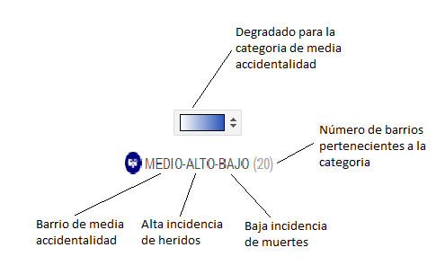

A continuación se presentan los datos en un mapa interactivo donde a cada barrio de la ciudad de Medellin se le ha asignado un grupo, siguiendo los
siguientes parámetros:
Grado de accidentalidad:
Alta accidentalidad: Se consideraran barrios de alta
accidentalidad aquellos que presenten un número de incidentes diarios mayor a 1.
Media accidentalidad: Se consideraran barrios de media
accidentalidad aquellos que presenten un número de incidentes mayor a 2 eventos por semana y menor o igual a 1 evento por dia.
Baja accidentalidad: Se consideraran barrios de baja
accidentalidad aquellos que presenten un número de incidentes menor a 2 eventos por semana.
Incidencia de heridos:
Alta incidencia de heridos: Se considerará un barrio con alta incidencia de heridos aquel que presente un porcentaje de heridos mayor al 75% sobre el número de incidentes totales.
Media incidencia de heridos: Se considerará un barrio con media incidencia de heridos aquel que presente un porcentaje de heridos mayor a 50% y menor o igual a 75% sobre el número de incidentes totales.
Baja incidencia de heridos: Se considerará un barrio con media incidencia de heridos aquel que presente un porcentaje de heridos menor o igual al 50% sobre el número de incidentes totales.
Incidencia de muertes:
Alta incidencia de muertes: Se considerará un barrio con alta incidencia de muertes aquel que presente un porcentaje de muertes mayor al 5% sobre el número de incidentes totales.
Media incidencia de muertes: Se considerará un barrio con media incidencia de muertes aquel que presente un porcentaje de muertes mayor a 2% y menor o igual a 5% sobre el número de incidentes totales.
Baja incidencia de muertes: Se considerará un barrio con baja incidencia de muertes aquel que presente un porcentaje de heridos menor o igual al 2% sobre el número de incidentes totales.
Ejemplo de agrupamiento:
A cada barrio se le asignó una cateogoria dependiendo de los parámetros anteriormenre mencionados, es decir, para un barrio cuya categoria es
MEDIO-ALTO-BAJO indica el grado de accidentalidad, la incidencia de heridos y la incidencia de muertes respectivamente, igualmente, el degradado
de color para cada categoria, depende de que tan alto o bajo este cada parámetro, como se muestra en la siguiente imágen:

Ejemplo categoria de agrupamiento de media accidentalidad.
Información del barrio:
Al hacer clic en cada unos de los barrios se podra apreciar la siguiente información: